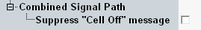

The measurement provides some softkey/hotkey combinations which have no equivalent in the configuration dialog. Most of these hotkeys provide display configurations (like diagram scaling). They are self-explanatory and do not have any remote-control commands assigned.
The remaining softkeys > hotkeys are described below.
The softkey "WLAN Signaling" is displayed only if the combined signal path scenario is active and is provided by the "WLAN Signaling" application selected as master application. See also "Scenario = Combined Signal Path".
The softkeys "ARB / List Mode" and "GPRF Generator" are displayed only if the standalone scenario is active and the generator shortcut is enabled, see "Generator Shortcut".
While one of the signaling or generator softkeys is selected, the "Config" hotkey opens the configuration dialog of the generator or signaling application, not the configuration dialog of the measurement.
Select this softkey and press [ON | OFF] to turn the signal transmission on or off. Alternatively, right-click the softkey.
Press the softkey two times (select it and press it again) to switch to the signaling application.
Remote command:Use the commands of the signaling application.
Provides access to the most important ARB and list mode settings of the GPRF generator.
Remote command:Use the commands of the GPRF generator.
Select this softkey and press [ON | OFF] to turn the GPRF generator on or off. Alternatively, right-click the softkey.
Press the softkey two times (select it and press it again) to switch to the generator application.
The hotkeys assigned to this softkey provide access to the most important GPRF generator settings.
Remote command:Use the commands of the GPRF generator.
In the "Spectrum Flatness" view select "Display" and "Display Mode" to switch between relative and absolute result values (dB vs. dBm).
Remote command:
This setting is located in the configuration tree. It is only visible if the combined signal path scenario is active.
The checkbox suppresses a warning that is displayed if the "WLAN Signaling" softkey is selected and the signal is on and you press [ON | OFF]. The warning asks you whether you really want to switch off the signal.
Remote command:n/a